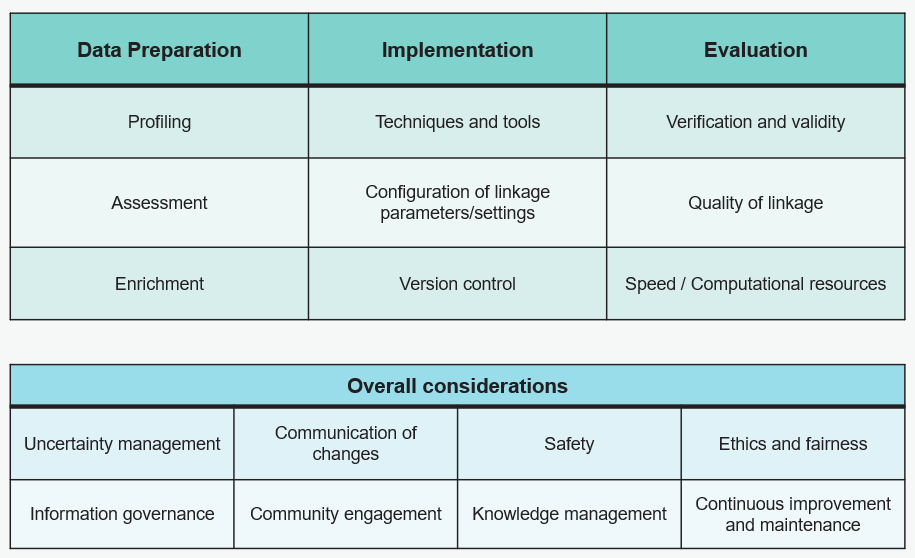

1. Introduction to the Quality Assurance Framework for Data Linkage (QAFDL)
1.1 Purpose of QAFDL
Data linkage is not a by-product of analysis, but a critical modelling step requiring an appropriate level of quality assurance. The objective of understanding and consolidating best practices in data linkage led to the creation of the Quality Assurance Framework.
The Quality Assurance Framework for Data Linkage acts as a guide designed to provide a structured approach to managing and assuring the quality of data linkage processes in NHS England, but we welcome collaboration from other organisations.
The QAFDL framework offers support for all stages of data linkage, from discovery to delivery. It is advised that the framework is consulted regularly to ensure that the quality assurance principles it contains are included in the project from inception. We view the QAFDL as a 'living' framework which we will iterate over time as it is implemented into our buisness processes.
The broad aims are:
-
To equip and empower practitioners with the means to decide the appropriate levels of quality assurance.
-
Function as a tracking instrument, enabling comprehensive evaluation of all dimensions described by the framework and facilitating the assessment of data linkage projects.
The QAFDL is based on three principles, linkage quality, transparency and safety. It can help boosting users' trust in the validity of the linked data for their analysis or research. It guides linkers and users on managing and interpreting linked data effectively, providing insights into the limitations of their linked data assets, enabling well-informed decisions and robust analyses. Moreover, the QAFDL promotes ethical and responsible use of linked data by suggesting best practices for data privacy and governance.
1.2 The 5W's of the QAFDL
| What | Why | Who | When | Where | How |
|---|---|---|---|---|---|
| Identifies key areas for assessment in data linkage projects. Provides tools for practitioners to determine quality assurance levels. | Helps all involved understand complexities, recognize data strength, guide informed decisions. | Primarily data linker's job, with recommended review by another person and reference by data users. | Supports all stages, from discovery to delivery. Regular consultation advised. | Essential in any environment where data linkage projects are planned and executed. Accessible to all involved for regular updates and review. | Level of quality assurance varies by project, determined by data linker and users. |
1.3 Overview of the Quality Assurance Framework dimensions
Over 4 key dimensions, the QAFDL outlines best practices, principles, and strategies to facilitate high-quality data linkage. 
1.4 Definition of data linkage
Data linkage refers to the process of connecting different datasets to create a more comprehensive view of an entity. An entity can be a patient, events, organisations, etc.
Good reads
- Guidance document: Data Linkage for people who work with data in government by the Best Practice and Impact Division OSR
- Guidance document - What is data linkage, examples, challenges, methods for linkage, quality assessment and more: Joined up data in government: The future of data linking methods
Data linkage is essential for healthcare research, statistics, and direct care, as it enables seamless integration of information and greatly impacting the quality of healthcare outcomes.
1.5 Benefits of data linkage
The NHS, as stated on the Long Term Plan, aims to use data more effectively across health and social care services, for both individual care and for planning and research purposes and this can be done through data linkage. Other benefits are:
-
Enhanced Insights: By combining data from different data sources, more in-depth information can be learnt about specific people, groups of people, or occurrences. Linkage also helps policy makers in the development, and evaluation of policies and programmes.
-
Longitudinal Analysis and research opportunities: Data linkage makes it possible to follow people over time, enabling longitudinal research that can more accurately highlight trends and patterns. Also, opens new possibilities for research that would not be feasible with isolated datasets.
-
Risk Management: By spotting trends and correlations that might otherwise go unnoticed in isolated datasets, linked data can help organisations foresee and address possible problems.
-
Reduced burden in providers: Data linkage reduces the need to collect the same information multiple times, thereby reducing the burden on providers. Data linkage can also reduce costs associated with duplicate efforts in data collection.
-
Improved Data Quality: By facilitating the comparison of data across many sources, linkage enables the identification and correction of discrepancies or errors.
-
Reducing Bias: When data from different sources is linked, it can help reduce selection bias in research studies, leading to more reliable findings.
-
Service Delivery: In healthcare and social services, data linkage can improve service delivery by providing a more holistic view of a person's needs and interactions with different services.
Good reads
- Full report - Talks about the benefits of linking data sources for public health research, as well as the opportunities and challenges associated with doing so and how to get around them: Enabling Data Linkage to Maximise the Value of Public Health Research Data
1.6 Useful links
Joined up data in government: the future of data linking methods. This cross-government review contains contributed articles on state-of-the-art data linking methods and makes recommendations for government data linkage.
Some more info and links available from here as well Data linkage – Government Analysis Function.
A nice short read Developing standard tools for data linkage: February 2021 - Office for National Statistics.
A more holistic report by the Office for Statistical Regulations (OSR) is the Data Sharing and Linkage for the Public Good: Follow-Up Report.
Intro to data linkage is a data linkage course offered by the ONS Learning Hub.
Ministry of Justice has a fantastic set of introductory material to data linkage, and especially probabilistic data linkage, as they are the authors of Splink, a Python package for probabilistic data linkage at scale. Particularly interesting the Bias in Data Linking blog post.
Robin Linacre, one of the lead computer scientists behind Splink, authored this blog/introductory course to Probabilistic Linkage.
Uni of Southampton also offers Introduction to Data Linkage. This is a full-immersion 2-day course offered in person or online by Prof. Katie Harron and Dr. James Doidge.
To find out more about what the team is up to, visit our NHS England data science website.
Created: September 20, 2024